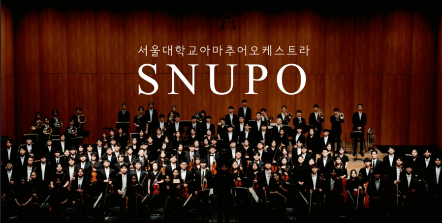
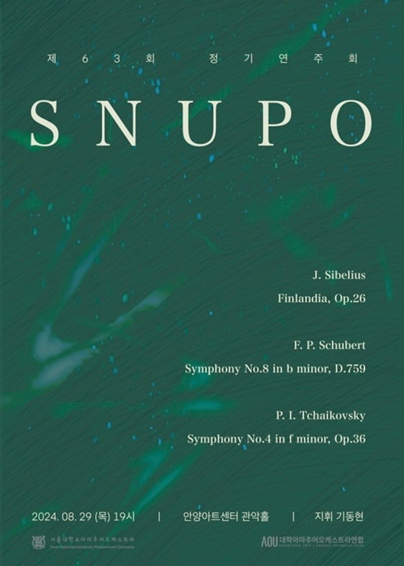
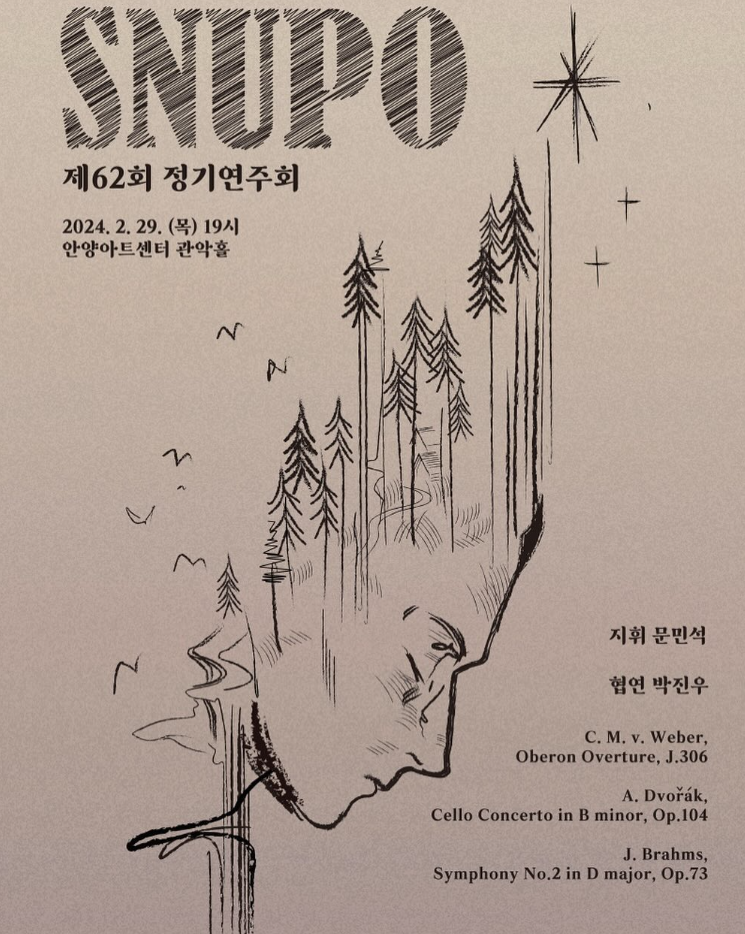
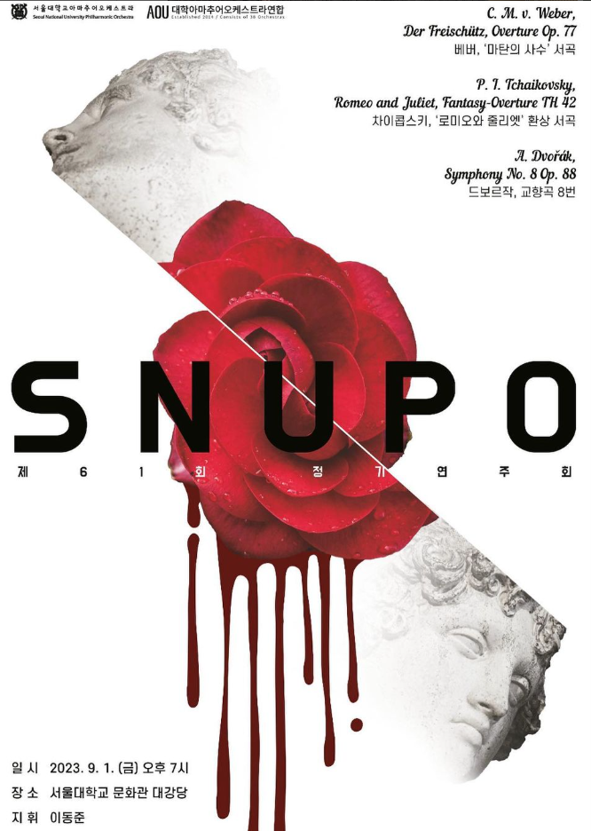
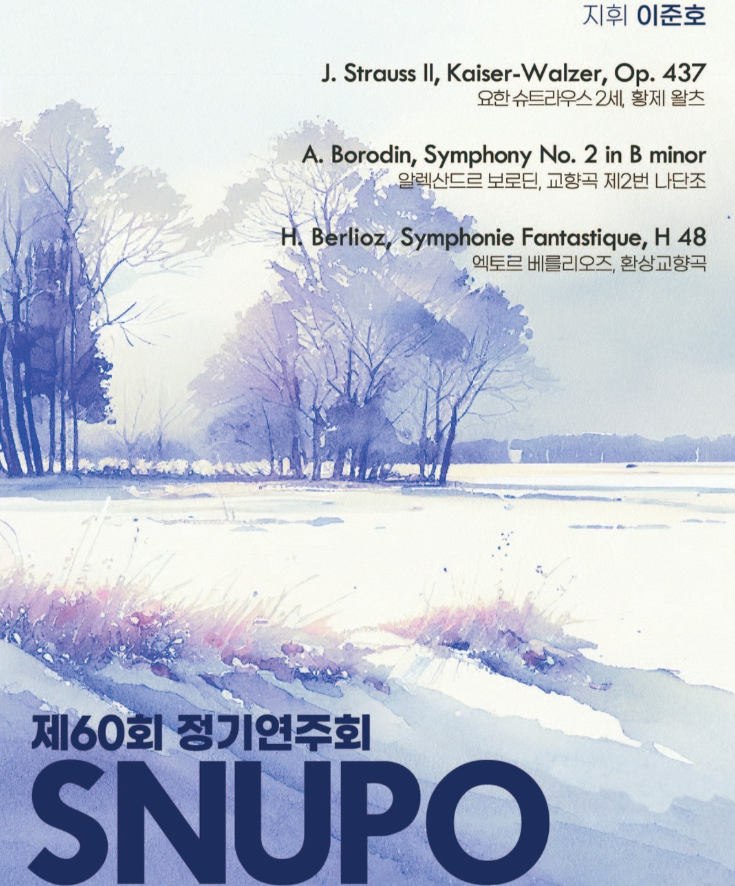
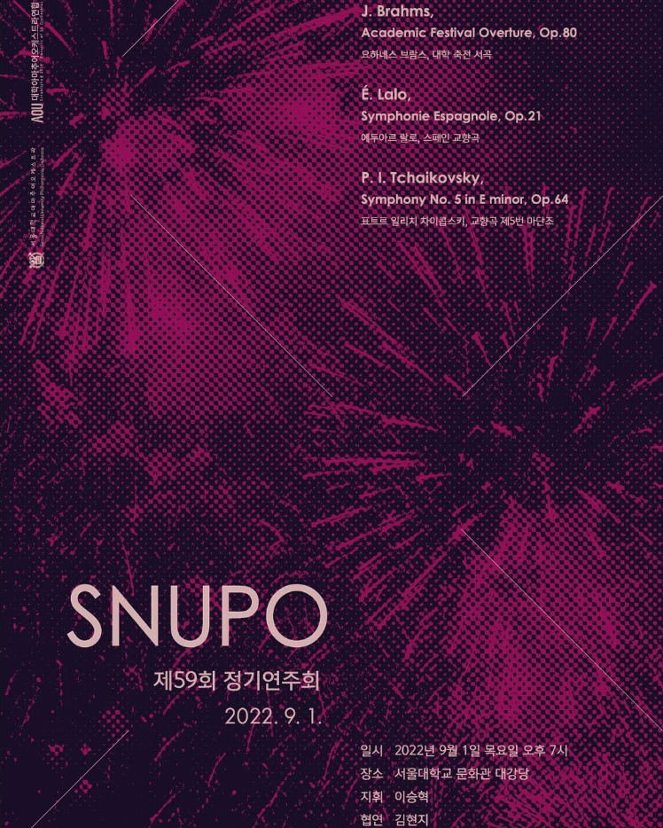

“서로 다른 소리로 하나 된 음악을 만드는 동아리"
서울대학교 아마추어 오케스트라 SNUPO는 1992년 창단된 클래식 음악 동아리로,
전공을 불문하고 음악을 사랑하는 학생들이 모여 진지한 연주 활동을 펼치는 중앙동아리입니다.
SNUPO는 음악을 진지하게 생각하며 원칙적인 연주를 위해 노력하고,
음악의 감동을 최대한 많은 사람들과 나누고자 합니다.
초보자와 숙련자가 함께 연주하며 서로를 배우고 조화로운 음악을 만들어가는 과정을 소중히 여기며,
클래식을 대중적인 문화로 확산하는 데에 기여하고자 합니다.
특히 클래식이 “소수 전문가의 문화”라는 고정관념을 깨고 “누구나 즐길 수 있는 문화”로 자리 잡을 수 있도록 노력합니다.
“서로 다른 소리로 하나 된 음악을 만든다”는 모토 아래,
음악의 진지함과 환희를 모든 단원들과 함께 공유하며 성장하는 동아리입니다.
“서로 다른 소리로 하나 된 음악을 만드는 동아리"
서울대학교 아마추어 오케스트라 SNUPO는 1992년 창단된 클래식 음악 동아리로,
전공을 불문하고 음악을 사랑하는 학생들이 모여 진지한 연주 활동을 펼치는 중앙동아리입니다.
SNUPO는 음악을 진지하게 생각하며 원칙적인 연주를 위해 노력하고,
음악의 감동을 최대한 많은 사람들과 나누고자 합니다.
초보자와 숙련자가 함께 연주하며 서로를 배우고 조화로운 음악을 만들어가는 과정을 소중히 여기며,
클래식을 대중적인 문화로 확산하는 데에 기여하고자 합니다.
특히 클래식이 “소수 전문가의 문화”라는 고정관념을 깨고 “누구나 즐길 수 있는 문화”로 자리 잡을 수 있도록 노력합니다.
“서로 다른 소리로 하나 된 음악을 만든다”는 모토 아래,
음악의 진지함과 환희를 모든 단원들과 함께 공유하며 성장하는 동아리입니다.





1992 서울대학교 악우협회 오케스트라 창단
2021 제 57회 정기연주회
2021.09.27 회장 | 박재형 지휘 | 이승혁 협연 | 이정환
2022 제 58 · 59회 정기연주회
2022.03.02 회장 | 박재형 지휘 | 이승혁 협연 | 문영란
2022.09.01 회장 | 박재형 지휘 | 이승혁 협연 | 김현지
2023 제 60 · 61회 정기연주회
2023.03.02 회장 | 장승민 지휘 | 이준호
2023.09.01 회장 | 장승민 지휘 | 이동준
2024 제 62 · 63회 정기연주회
2024.02.29 회장 | 김동민 지휘 | 문민석 협연 | 박진우
2024.08.29 회장 | 김동민 지휘 | 기동현